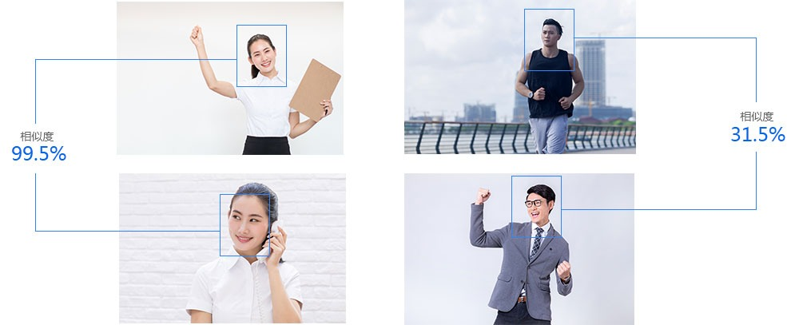
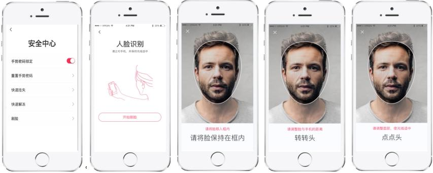

立即接入
人脸比对
人脸1：1对比，输入两张人脸照片系统根据人工智能算法返回相似度值，用百分数表示，用于人证合一验证
活体检测
实时反馈眼睛、嘴巴、头部姿态等状态，通过给用户设定完成相关动 作，判断是否为活体。支持指定生效的动作顺序
产品优势
-

算法领先
基于专业的深度学习算法和海量数据训练，人脸检测和人脸识别算法在最权威的公开评测比 赛中排名世界领先
-

稳定高效
提供企业级稳定、精确的大流量服务。支持毫 秒级的识别响应能力、弹性灵活的高并发承载 及99.99%的可靠性保障
-
简单易用
可通过API参数自由组合各个人脸技术模块， 实现不同的功能
-
稳定可靠
依托深度学习实验室的技术实力，提供稳定、 精确的大流量服务
-
识别精度高
人脸识别技术国际领先，识别准确率超过百分 之九十九
-
活体检测技术
SDK+接口双重融合检测，可抵御照片、视频 等攻击，精确区分活体，安全可靠
应用场景
-
互联网金融通过自拍照与身份证照或公安系统照片之间的人脸对 比，核实用户身份是否属实，优化金融等高风险行业 复杂的身份验证流程
-
互联网金融通过自拍照与身份证照或公安系统照片之间的人脸对 比，核实用户身份是否属实，优化金融等高风险行业 复杂的身份验证流程
-
互联网金融通过自拍照与身份证照或公安系统照片之间的人脸对 比，核实用户身份是否属实，优化金融等高风险行业 复杂的身份验证流程

实时联网 快速查询安全可靠
立即接入